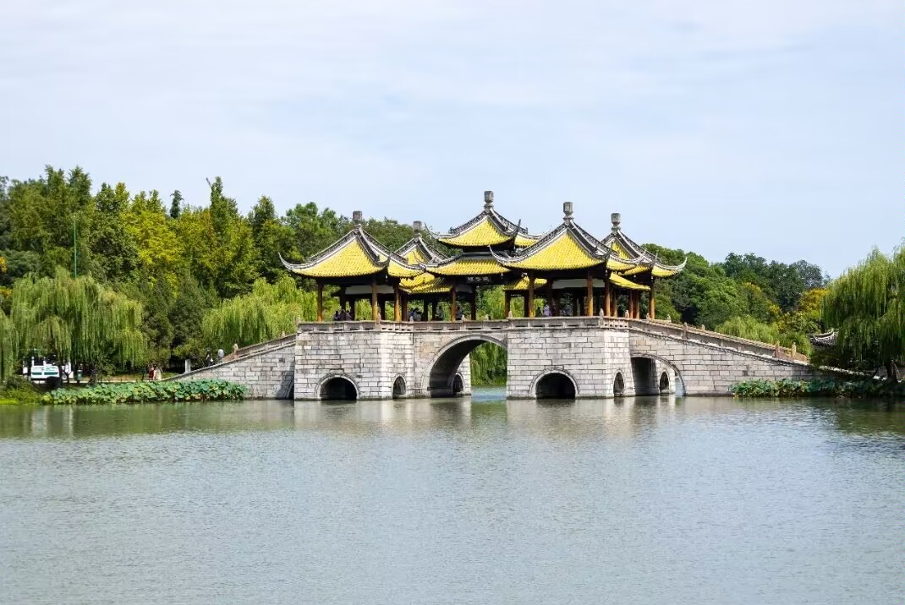

|  |
瘦西湖位于江苏省扬州市西北部，因湖面瘦长，称“瘦西湖”。窈窕曲折的湖道，串以长堤春柳、四桥烟雨、徐园、小金山、吹台、五亭桥、白塔、二十四桥、玲珑花界、熙春台、望春楼、吟月茶楼、湖滨长廊、石壁流淙、静香书屋等两岸景点，俨然一幅天然秀美的国画长卷。 湖面迂回曲折，迤逦伸展，仿佛神女的腰带，媚态动人。清朝时，康熙、乾隆二帝曾数次南巡扬州，当地的豪绅争相建园，遂得“园林之盛，甲于天下”之说。 扬州瘦西湖全长4.3公里，游览面积30多公顷，有长堤、徐园、小金山、吹台、月观、五亭桥、凫庄、白塔等名胜。湖区利用桥、岛、堤、岸的划分，使狭长湖面形成层次分明、曲折多变的山水园林景观。 在清秀婉曲的瘦西湖两岸，缀以熔南秀北雄于一炉的扬州古典园林群，形成移步换景、相互因借的山水长轴；名寺古刹和古城墙垣绵延相属，名胜古迹和历史遗存散布其间。风韵独具的自然风光和含蕴丰厚的人文景观相映生辉，是镶嵌在历史文化名城中的一颗璀璨明珠。 |